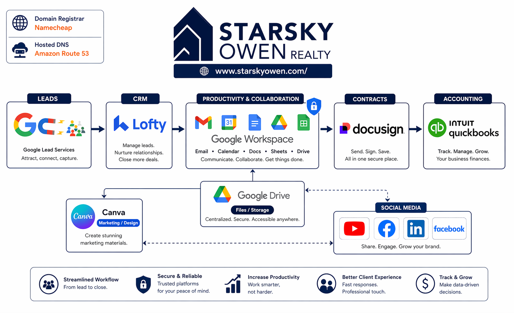

Starsky Owen Realty tech ecosystem audit report.
A client-facing example showing how Next-Gen-IT maps a small realty team’s operating stack, identifies workflow risk, and turns the findings into a practical action plan.
Executive Summary
This example maps a small real estate team using Google lead sources, Lofty, Google Workspace, DocuSign, Canva, QuickBooks, Namecheap, and AWS Route 53. The stack is directionally sound, but the audit surfaces common small-team risk: unclear tool ownership, duplicate data handoffs, email/domain security gaps, and marketing assets that can become person-dependent.
The recommended approach is to harden domain and email controls first, then define which system owns each stage of the lead-to-close workflow.
Current-State Workflow Diagram

Figure 1 — Lead-to-close workflow across Google lead sources, Lofty, Google Workspace, DocuSign, QuickBooks, Canva, and social channels.
Observed Stack Inventory
| Category | Tool | Role in workflow | Audit focus |
|---|---|---|---|
| Domain registrar | Namecheap | Domain registration and renewal control | Access, renewal, ownership |
| DNS / web hosting | AWS Route 53 | DNS records and hosted zone | SPF, DKIM, DMARC, change control |
| Email + collaboration | Google Workspace + Drive | Email, calendar, docs, storage | Mailbox security and Drive sharing |
| CRM / lead routing | Lofty | Lead capture, nurture, routing | Lead handoff and source-of-truth rules |
| Lead sources | Search/profile discovery and web inquiries | Attribution and response-time workflow | |
| Contracts | DocuSign | Signature workflows and transaction docs | Template control and signed-file handoff |
| Marketing | Canva | Listing, brand, and social assets | Template ownership and export storage |
| Accounting | QuickBooks | Back-office accounting | Close-out handoff and permissions |
Key Findings
Domain and email controls need hardening
Confirm registrar ownership, Route 53 control, Google Workspace admin access, and publish a clean email-auth posture.
Google Drive needs a durable shared storage model
Create shared drives for listings, transactions, marketing assets, and final client documents so files do not live in personal accounts.
Lofty, DocuSign, and QuickBooks likely create manual handoffs
Map the exact point where a lead becomes a transaction and define what fields move between systems.
Canva and social assets need ownership rules
Store approved exports in Google Drive and define reusable templates, naming standards, and a publishing checklist.